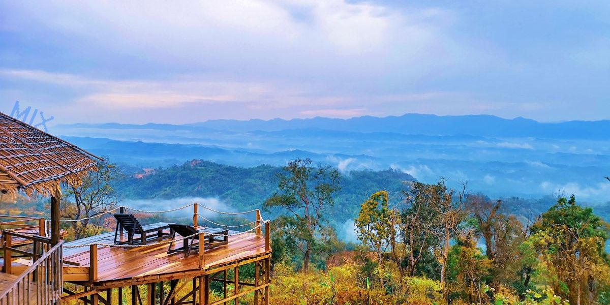
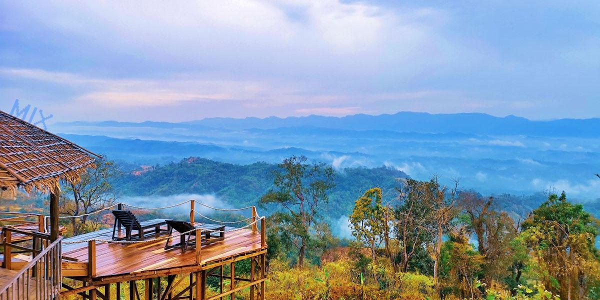

Sajek
 

Sajek Valley is an emerging tourist spot in Bangladesh situated among the hills of the Kasalong range of mountains in Sajek union, Baghaichhari Upazila in the Rangamati District. The valley is 1,476 feet (450 m) above sea level. Sajek valley is known as the Queen of Hills & Roof of Rangamati. Sajek is located in the verdant hills of Kasalong range of mountains amidst the serene and exotic beauty of nature. Lofty mountains, dense forest, sprawling grasslands and miles of hilly tracks feature the valley. The simple and basic indigenous lifestyle of local people is just fabulous for visitors to spend a day.
How To Go
Though Sajek is located in the Rangamati district, it is much easier to travel with Dighinalala of Khagrachari district. So first you have to come to Khagrachari. If you want to go to Khagrachari from Dhaka, you can go by Saudia Paribahan, Shyamoli, Shanti Paribahan, S. Alam, Eagle, etc on the bus. It will cost you nearly BDT 520 in the Non-AC bus. If you want to go to the AC bus you will find BRTC or Saint Martin Paribahan with BDT 700 to 900. Besides, the Shanti Paribahan goes directly to Dighinala and it takes only BDT 580. There are counters of these buses at various points of the city including Gabtali, Kalabagan in Dhaka. If you want to go on holidays, it may be difficult to get a ticket if you don’t buy the ticket before. The distance between Khagrachari and Sajek is about 70 km. You can visit Sajek Valley by reserving Jeep Gari/Chander Gari from Khagrachari. It will cost you BDT 8000 to 10000 with the returning fare. It is perfect for 12 to 15 people. But if you are in a small group, then join with another group to reduce the cost. If it is not possible to find any other group, then you can take CNG. It will cost you BDT from 4000 to 5000. However, it is better not to travel by CNG as the road is very wavy.